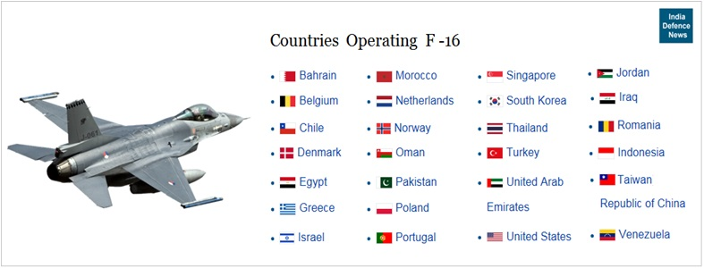

Global Operators of the F-16
Jump to a section: United States | Key Operators | Fleet Table
The F-16 is the most widely exported Western fighter jet in history. As of 2024, it has been operated by over 25 nations across North America, Europe, the Middle East, Asia, and South America. Its combination of high performance, reasonable purchase price, extensive operator network, and continuous upgrade path has made it the default choice for nations seeking a modern, proven multirole fighter. The sheer scale of F-16 operations also creates a powerful logistics and training ecosystem: spare parts, simulators, and trained maintainers are available worldwide.

list of countries using the f16
The United States Air Force
The United States Air Force was the F-16’s first and largest operator, receiving its first aircraft in 1978. At its peak, the USAF operated over 1,400 F-16s, making it the most common aircraft in the Air Force inventory. Today, the USAF fleet has been reduced as F-16s are retired and replaced by the F-35A Lightning II, but a significant number of F-16C/D aircraft remain in active service with both the Active component and the Air National Guard.
The USAF also operates F-16s in a unique secondary role: as Aggressor aircraft at the USAF Weapons School and at Nellis Air Force Base, where they simulate enemy aircraft in realistic training scenarios against other USAF fighters. The F-16’s agility and small radar cross-section make it an effective aircraft for the kinds of adversary aircraft American pilots might face in conflict.
Key Operator Profiles
- Israel
- Israel operates the largest non-US F-16 fleet, including the uniquely capable F-16I Sufa (see Variants page). The Israeli Air Force has used the F-16 in more combat operations than any other operator, accumulating an unmatched operational record over more than four decades. Israel also modifies its F-16s extensively with indigenous avionics and weapons systems, making its aircraft significantly different from the standard export configuration. Israel has received F-16A/B, C/D, and I variants.
- Turkey
- Turkey is one of the largest F-16 operators in NATO, with a fleet of F-16C/D Block 30, 40, and 50 aircraft. Turkey also co-produced a significant number of its F-16s domestically under a licensed manufacturing agreement with Tusas (now TUSAS Aerospace Industries). The Turkish Air Force has used its F-16s extensively in counter-terrorism operations against PKK targets in northern Iraq and Syria, as well as in the 2015 shootdown of a Russian Su-24 that violated Turkish airspace.
- South Korea
- The Republic of Korea Air Force (ROKAF) operates both imported F-16C/D Block 32 and 52 aircraft and domestically built KF-16C/D aircraft manufactured by Korean Aerospace Industries (KAI) under a co-production agreement. The KF-16 programme transferred significant aerospace manufacturing technology to South Korea and served as a springboard for Korea’s subsequent development of the indigenous KF-21 Boramae fighter.
- Greece
- Greece operates one of the most modernised European F-16 fleets, having committed to upgrading the majority of its F-16C/D Block 30/50 aircraft to the F-16V (Viper) standard. Greek F-16s have participated in numerous NATO exercises and deployments and flew missions over Libya during Operation Unified Protector in 2011. Greece’s ongoing tensions with Turkey — itself also an F-16 operator — make air superiority a particularly high priority for the Hellenic Air Force.
- Pakistan
- Pakistan operates F-16A/B and F-16C/D Block 52 aircraft and has one of the most operationally experienced F-16 fleets in the world. Pakistani F-16s scored multiple aerial kills against Soviet and Afghan aircraft during the 1980s Soviet-Afghan War, and the aircraft remains the centrepiece of Pakistan’s offensive air power. In February 2019, a Pakistani F-16 was involved in an aerial engagement with Indian Air Force aircraft during a tense cross-border escalation.
F-16 Fleet Sizes by Nation
| Nation | Approx. Fleet Size | Primary Variant(s) | In Service Since |
|---|---|---|---|
| United States | ∼800 (active + ANG) | F-16C/D Block 40/42/50/52 | 1978 |
| Israel | ∼175 | F-16A/B, F-16C/D, F-16I | 1980 |
| Turkey | ∼230 | F-16C/D Block 30/40/50 | 1987 |
| South Korea | ∼160 | KF-16C/D, F-16C/D Block 52 | 1994 |
| Greece | ∼155 | F-16C/D Block 30/50/52, F-16V | 1989 |
| Pakistan | ∼75 | F-16A/B, F-16C/D Block 52 | 1983 |
| Taiwan | ∼145 | F-16A/B Block 20, F-16V | 1997 |
| Netherlands | ∼60 | F-16AM/BM (F-35A replacing) | 1979 |
| Belgium | ∼48 | F-16AM/BM (F-35A replacing) | 1979 |
| United Arab Emirates | ∼79 | F-16E/F Block 60 | 2004 |
| Poland | ∼48 | F-16C/D Block 52+ | 2006 |